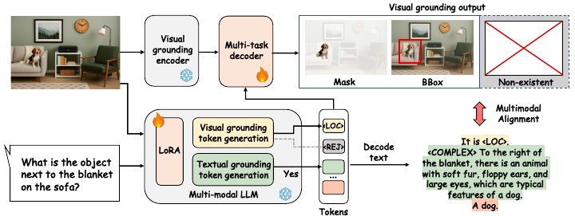
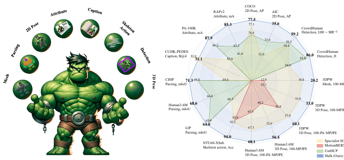
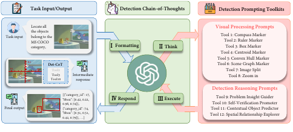
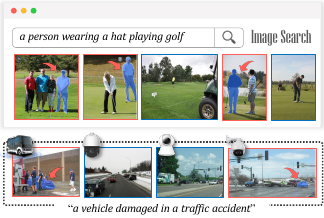
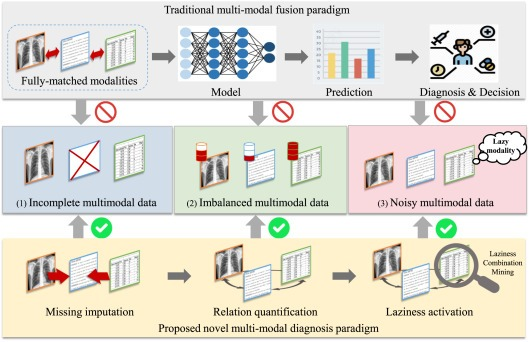
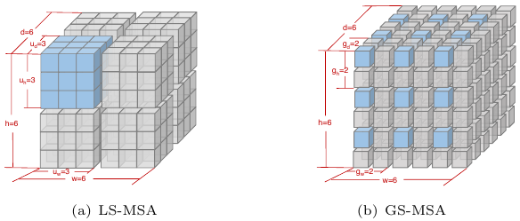
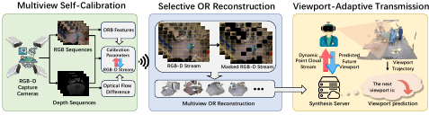
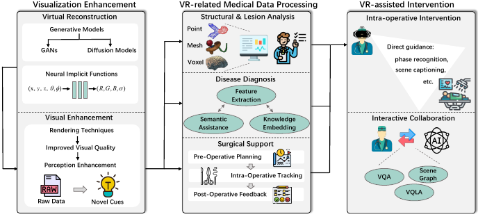

PostAlign: Multimodal Grounding as a Corrective Lens for MLLMs
Connects model answers to visual regions and textual rationales to improve fine-grained understanding.
Hi, I am Yixuan Wu (Chloe). I joined Alibaba DAMO Academy as a Researcher through the Alibaba Star Program, working on multimodal foundation models. I also hold a research position at Zhejiang University, working with Prof. Jian Wu.
I pursued my Ph.D. at Zhejiang University under the supervision of Prof. Jian Wu and work closely with Assistant Prof. Jintai Chen. During my Ph.D., I was a Visiting Scholar with the Torr Vision Group (TVG) at the University of Oxford, working with Prof. Philip Torr and Dr. Jindong Gu. I completed my undergraduate studies at Zhejiang University, during which I was a visiting student at Yale University.
My research interests include multimodal foundation models, fine-grained perception and reasoning, and medical AI. I welcome collaborations with researchers in academia and industry. Prospective interns are welcome to email me their CVs.
A selection of papers, organized by research direction. For the complete and current list, visit Google Scholar.

Connects model answers to visual regions and textual rationales to improve fine-grained understanding.


A prompting toolkit and detection reasoning chain for zero-shot object detection with MLLMs.


Addresses missing, imbalanced, and noisy modalities in medical prediction.



Alibaba DAMO Academy
Researcher · Alibaba Star Program
Alibaba Taotian
Research Intern · T-Star Program, Intelligent Search and Recommendation
Shanghai AI Lab
Research Intern · Multimodal models and human-centric foundation models
SenseTime
Research Intern · Vision-language models
National-level academic honor · 2025
University-level distinction · 2026